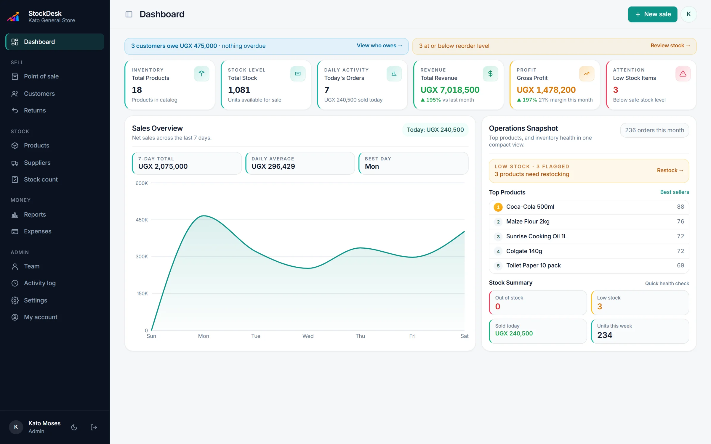

Know what is on the shelf without counting every day
Each sale takes the items out of stock as it happens, and each return puts them back. Goods you receive from suppliers are added when you record the delivery. The number you see is the number that should be on the shelf.
A warning before you run out
Give each product a reorder level. When stock reaches it, StockDesk lists the item on the dashboard, so you can restock fast sellers before customers find an empty shelf.
Stock counts that show what went missing
Count the shelf and enter what you find. StockDesk compares it with what should be there, shows the difference for each item, and records who did the count. Regular counts are the quickest way to spot damage, mistakes and theft.
Suppliers and purchases
- Record what you buy from each supplier and at what cost.
- See how much you owe each supplier and pay in parts, by cash, Mobile Money or bank.
- Buying costs feed into profit, so you can see what each sale really made you.
Bring your product list from Excel
If your products are already in Excel, import them in one go with names, prices, costs and quantities. You can export your sales to Excel whenever your accountant asks.
Goods and services together
Sell repairs, delivery, salon work or labour alongside your goods. Services have no stock to track and can have a fixed price or one agreed at the counter.
Questions
Can I import my products from Excel?
Yes. Upload your list with names, prices, buying costs and quantities. StockDesk checks it first and shows any rows it cannot read before saving anything.
Does stock update when I sell offline?
Yes. The device keeps selling and adjusts its own stock figures, and the shop's stock is updated when the sales sync.
Can several staff use it at the same time?
Yes. Each person signs in with their own account, and every sale, delivery and stock count is recorded with their name.
Will it show my profit?
Yes. Each sale remembers what the items cost you at that moment, so profit stays right even when supplier prices change.
Try StockDesk free for a month
Set up your shop in about two minutes. No card needed, and you can pay later with MTN MoMo or Airtel Money.
Start your free month